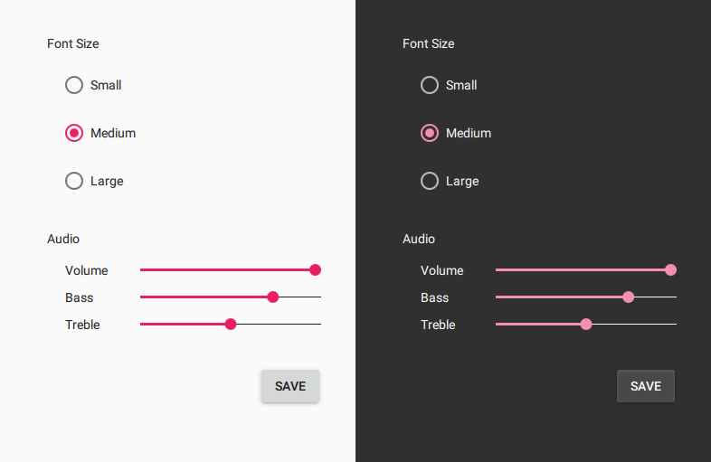

Qt Quick Controls 2
Qt Quick Controls 2 provides a set of controls that can be used to build complete interfaces in Qt Quick. The module was introduced in Qt 5.7.
Qt Quick Controls 2 comes with a selection customizable styles. See Styling Qt Quick Controls 2 for more details.
|  | ||
| Default | Material | Universal |
Prerequisites
The QML types can be imported into your application using the following import statement in your .qml file:
import QtQuick.Controls 2.2
The C++ classes can be included into your application using the following include statement:
#include <QtQuickControls2>
To link against the corresponding C++ libraries, add the following to your qmake project file:
QT += quickcontrols2
For more details, see Getting Started with Qt Quick Controls 2.
Versions
Qt Quick Controls 2.0 was introduced in Qt 5.7. Subsequent minor Qt releases increment the import version of the Qt Quick Controls 2 modules by one. The experimental Qt Labs modules use import version 1.0.
Qt | QtQuick | QtQuick.Controls,QtQuick.Controls.Material,QtQuick.Controls.Universal,QtQuick.Templates | Qt.labs.calendar,Qt.labs.platform |
|---|---|---|---|
| 5.7 | 2.7 | 2.0 | 1.0 |
| 5.8 | 2.8 | 2.1 | 1.0 |
| 5.9 | 2.9 | 2.2 | 1.0 |
| ... | ... | ... | ... |
Important Concepts in Qt Quick Controls 2
- Qt Quick Controls 2 Guidelines
- Styling Qt Quick Controls 2
- Customizing Qt Quick Controls 2
- High-DPI Support in Qt Quick Controls 2
- Using File Selectors with Qt Quick Controls 2
- Differences between Qt Quick Controls
- Deploying Qt Quick Controls 2 Applications
- Qt Quick Controls 2 Configuration File
- Supported Environment Variables in Qt Quick Controls 2